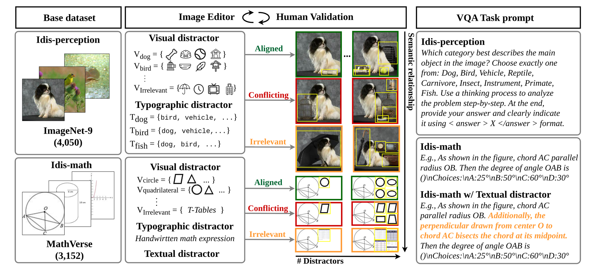
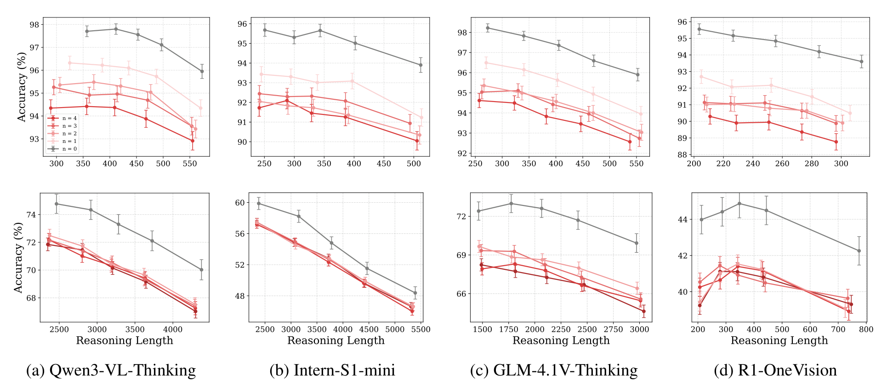
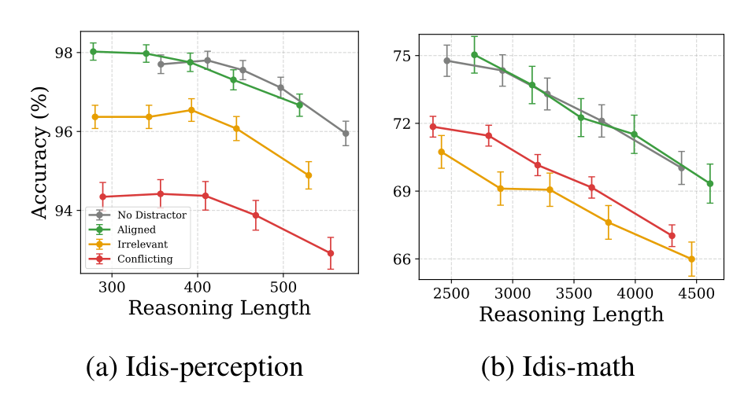
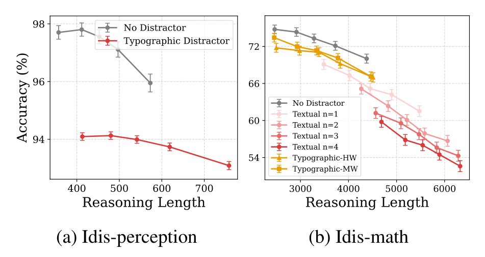
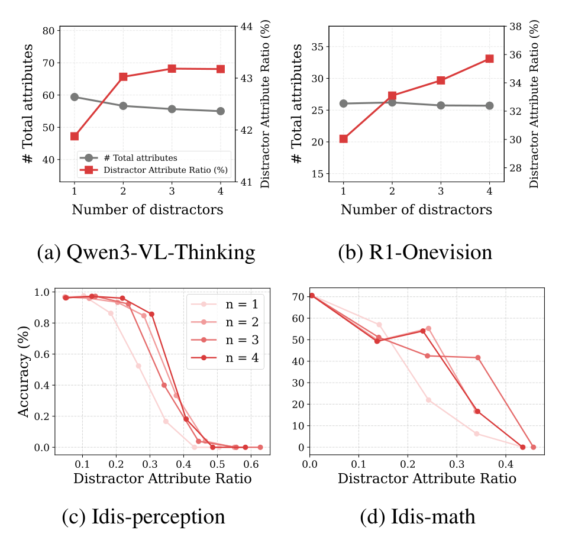
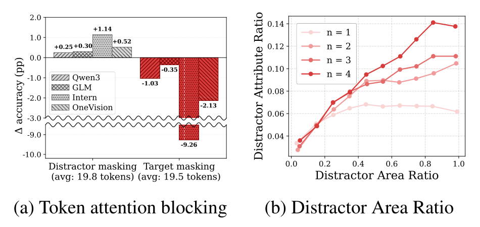
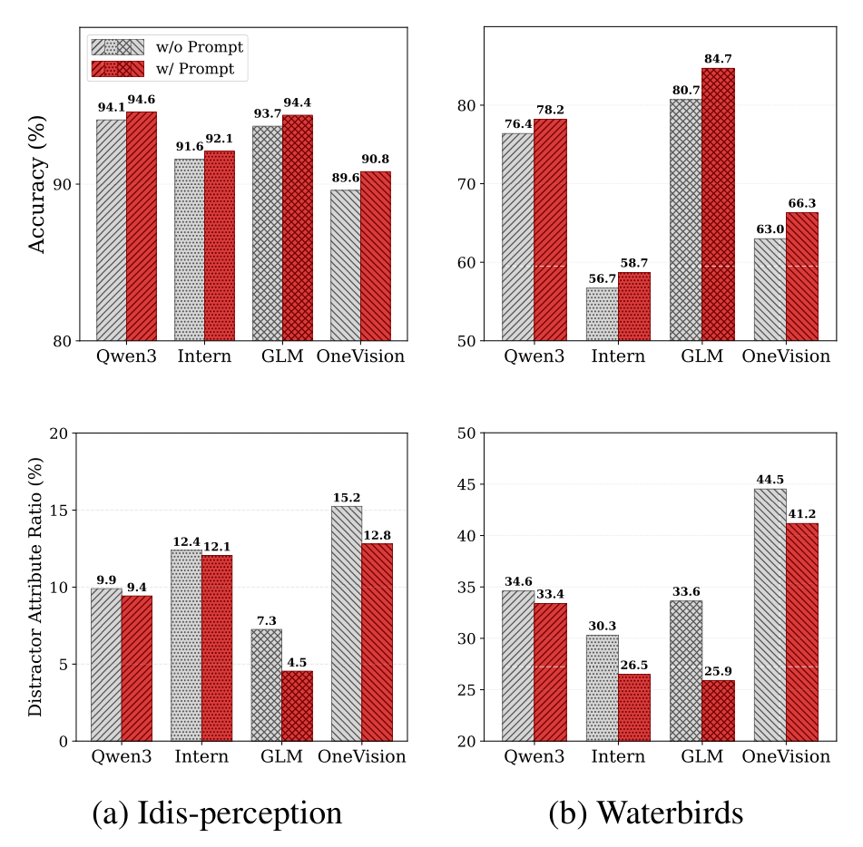

Abstract
How does irrelevant information (i.e., distractors) affect test-time scaling in vision-language models (VLMs)? Prior work on text-only language models has shown that textual distractors can intensify inverse scaling, causing models to reason longer but less effective reasoning traces. In this work, we investigate whether similar phenomena arise in multimodal settings. We introduce Idis (Images with distractors), a visual question-answering dataset that systematically varies distractors along semantic and numerical dimensions. Our analyses reveal that visual distractors affect reasoning VLMs in a fundamentally different way from textual distractors: although inverse scaling still emerges, visual distractors reduce accuracy without increasing reasoning length. We further show that attribute counts extracted from reasoning traces provide key insights into how distractors interact with reasoning length and accuracy. As a sanity check, we propose a simple prompting strategy that mitigates distractor-driven predictions in reasoning vision-language models.
Idis: Images with Distractors

Idis is a VQA benchmark suite for studying how distractors shape the test-time scaling of reasoning VLMs. It is built from two task families and comprises over 277k images that keep the original target information and answer while adding one or more distractors:
- Idis-perception — perception-centric object classification on the 4,050 images of ImageNet-9 (9 classes). Distractor objects are inserted with Gemini 2.5 Flash Image; typographic distractors render non-target class names into the image.
- Idis-math — reasoning-centric visual math problems on the 3,152 testmini samples of MathVerse. Geometric figures or tables are composited around the diagram, handwritten math expressions serve as typographic distractors, and Sonnet 4.5 writes answer-irrelevant sentences for textual distractors.
Distractors are varied along three axes, each with a fixed base example so that changes in model behavior can be attributed to the distractor alone:
- Modality. Visual objects inserted into the image, typographic text rendered into the image, or textual sentences inserted into the question prompt.
- Number. One to four distractors per sample, all drawn from the same semantic category.
- Semantics. Aligned (a bird cage for “bird”; another circle for a circle problem), conflicting (a bird cage for “vehicle”; a quadrilateral for a circle problem), or irrelevant (a TV; a table).
Every sample passes iterative human verification: the target must remain unchanged, the answer preserved, and each distractor must match its intended semantic category.
Main Results
We evaluate four open-weight reasoning VLMs (Qwen3-VL-8B-Thinking, GLM-4.1V-9B-Thinking, Intern-S1-mini and R1-OneVision-7B-RL) under sequential test-time scaling: for each question we sample five responses, rank them by reasoning length, and report the accuracy of each rank.

Number of distractors. In reasoning LMs, more textual distractors intensify inverse scaling by making traces longer. In reasoning VLMs, additional visual distractors instead shift the curve downward while the range of reasoning lengths stays essentially the same. On Idis-math the marginal effect of more than one distractor is small, and for R1-OneVision the shape of the curve is preserved despite the shift.


Distractor semantics. On Idis-perception, semantically conflicting distractors cause the largest drop, whereas aligned distractors cause little to no degradation relative to the no-distractor baseline. On Idis-math, irrelevant distractors (tables from LogicVista) hurt the most, presumably because they are the most out-of-distribution for geometry problems. Number and semantics act alike: the severity of distraction grows with more, or more confusing, distractors.
Modality matters. The same distracting information can be rendered into the image or written into the prompt. Typographic distractors mirror visual distractors and shift the curve downward with limited change in reasoning length. Textual distractors inserted into the prompt instead reproduce the pattern of reasoning LMs: accuracy drops because the traces get longer. The modality of distraction, rather than whether the content is an object or a piece of text, dominates the scaling behavior.
A Closer Look: Distractor Attributes
Why does accuracy fall when the trace does not get longer? We parse the visual attributes verbalized in each reasoning trace (with DeepSeek-V3.2-Exp), link them to the target or to a distractor, and measure the distractor attribute ratio: the fraction of attributes that describe distractors.


- The ratio, not the length, predicts failure. On Idis-perception, accuracy stays above 97% when fewer than 20% of the attributes describe distractors and drops to near zero once the ratio exceeds 50%; Idis-math shows the same cliff around 0.4.
- The trace shapes the answer. Attention blocking shows that attributes written into the trace causally influence the final prediction, rather than merely rationalizing it.
- Bigger and more distractors mean more distractor talk. The ratio grows with the distractor area ratio and with the number of distractors, which we confirm on a size-controlled variant, Idis-manual.
Sanity Check: Attribute-Guiding Prompt
If distractor attributes in the trace drive wrong answers, suppressing them should help. As a sanity check we add a short instruction to the original prompt that asks the model to reason from the target object alone, e.g.
“First identify the main object. Base your reasoning only on that object’s own visual attributes.”

The prompt yields a small but consistent accuracy gain on Idis-perception (0.5–1.2 points) and a larger one on Waterbirds (1.8–4.0 points), where the distractor is the background rather than an inserted object. In both cases the gain coincides with a drop in the distractor attribute ratio. Prompting alone is a limited fix, but it suggests that steering what a reasoning VLM verbalizes about the image is a viable route to distractor-robust reasoning.
BibTeX
@inproceedings{bae2026idis,
title = {Understanding the Effects of Distractors on Reasoning Vision-Language Models},
author = {Bae, Jiyun and Ok, Hyunjong and Mo, Sangwoo and Lee, Jaeho},
booktitle = {Proceedings of the 2026 Conference on Empirical Methods in Natural Language Processing (EMNLP)},
year = {2026}
}